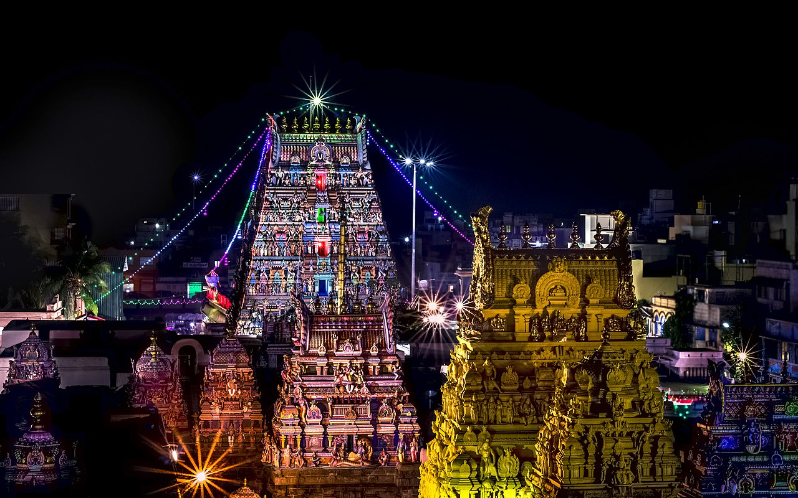
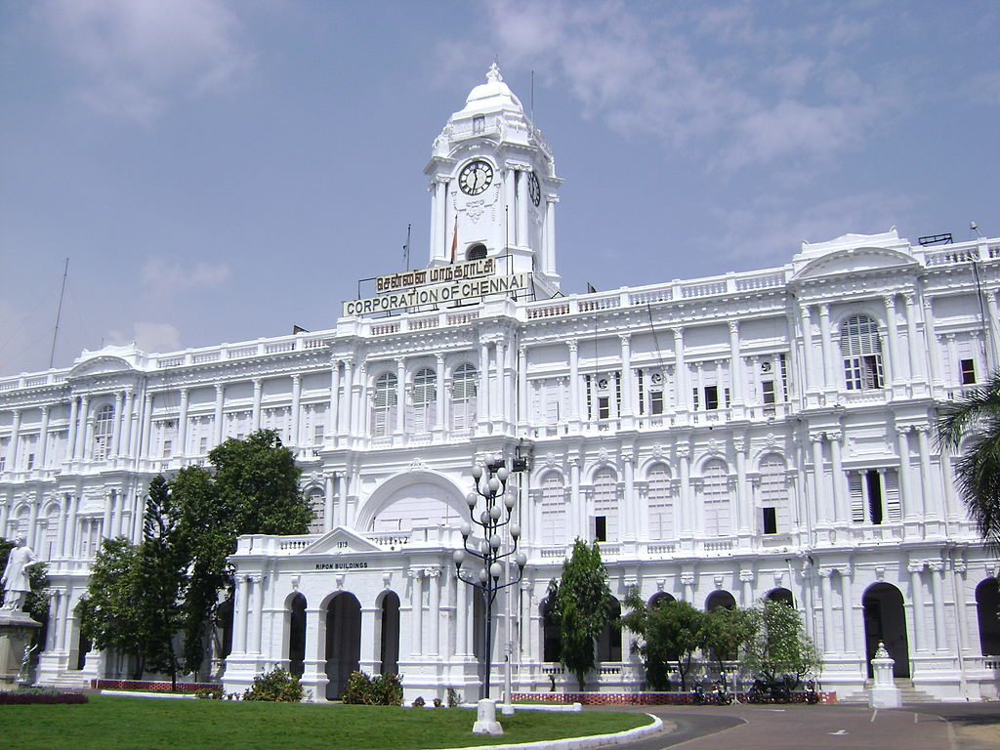
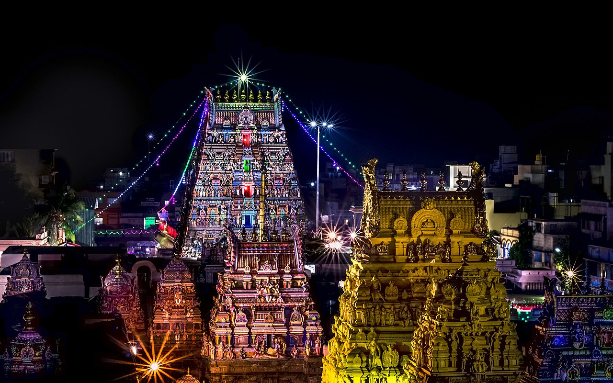
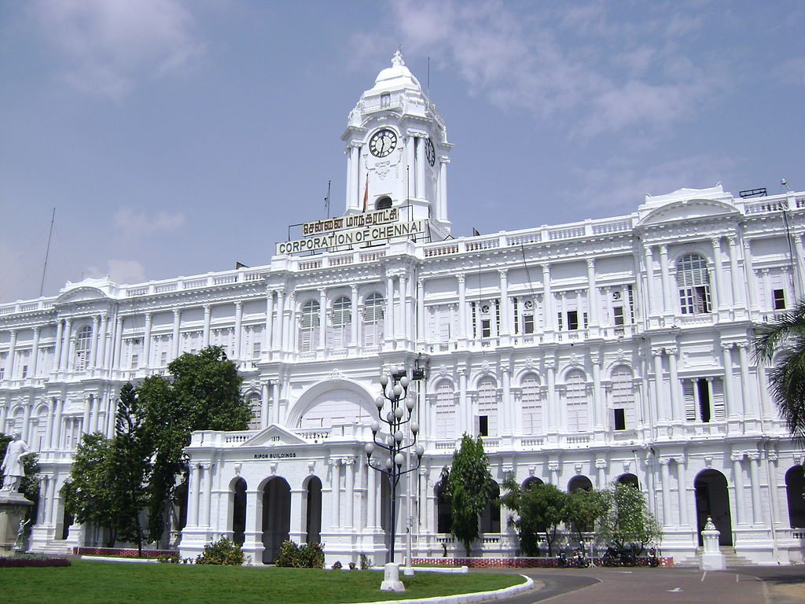

Chennai formerly known as Madras (the official name until 1996), is the capital city of the Indian state of Tamil Nadu.
The state's largest city in area and population as well, Chennai is located on the Coromandel Coast of the Bay of Bengal,
and is the most prominent cultural, economic and educational centre of South India.
Chennai is ranked as a beta-level city in the Global Cities Index,and was ranked the best city in India by India Today in the 2014 annual Indian city survey.
In 2015 Chennai was named the "hottest" city (city worth visiting and worth living in for long term) by the BBC, citing the mixture of both modern and traditional values.
National Geographic mentioned Chennai as the only South Asian city to feature in its 2015 "Top 10 food cities" list.Chennai was also named the ninth-best cosmopolitan city in the world by Lonely Planet.
In October 2017, Chennai was added to the UNESCO Creative Cities Network (UCCN) list for its rich musical tradition.More than one-third of India's automobile industry is based in the city.
Home to the Tamil film industry, Chennai is also known as a major film production centre. It is one of the 100 Indian cities to be developed as a smart city under the Smart Cities Mission.
 


